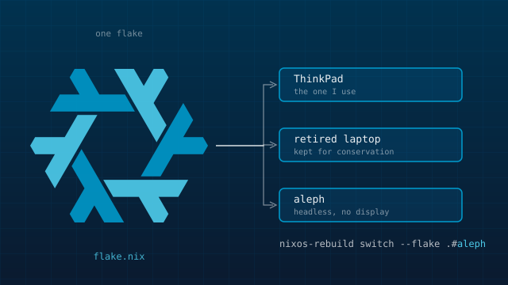

One flake for every machine I run
A NixOS monorepo: flake-parts with auto-imported modules, a laptop, a retired laptop kept for conservation, and a headless server built from the same tree. Secrets live in the repo encrypted; services are reachable only through a VPS.
NixOSflake-partssops-nixTailscale
Since Feb 2026 · config not published, an eight-part writeup is
Start the series →Notes: One file, one capability: how I stopped maintaining an import list · Secrets, kept with keys I already had · One flake, three machines that barely resemble each other